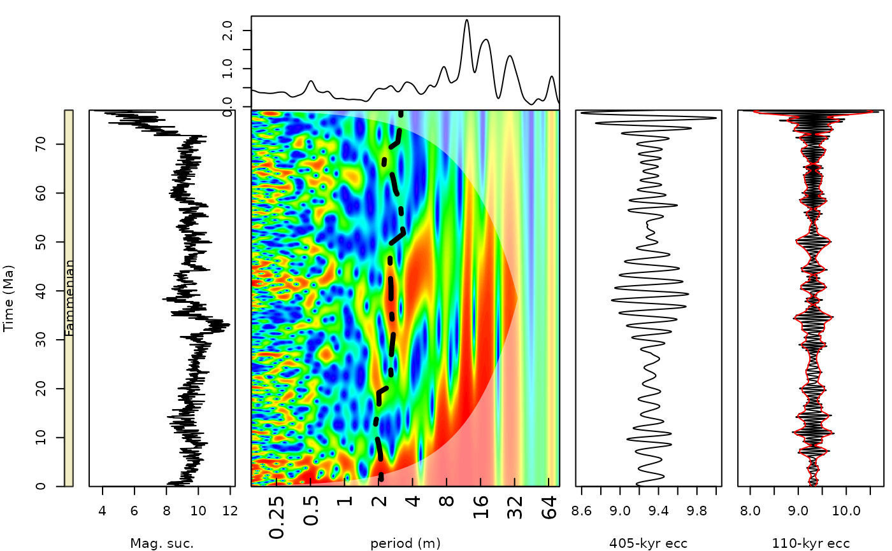

Generates a plot of a wavelet scalogram which can be integrated into a larger composite plot
Usage
add_wavelet(
wavelet = NULL,
lowerPeriod = NULL,
upperPeriod = NULL,
lower_depth_time = NULL,
upper_depth_time = NULL,
n.levels = 100,
plot.COI = TRUE,
color_brewer = "viridis",
palette_name = "viridis",
plot_dir = FALSE,
add_lines = NULL,
add_points = NULL,
add_abline_h = NULL,
add_abline_v = NULL,
plot_horizontal = TRUE,
period_ticks = 1,
periodlab = "period (m)",
main = NULL,
yaxt = "s",
xaxt = "s",
depth_time_lab = "depth (m)",
colour_brewer = NULL
)Arguments
- wavelet
Wavelet object (list) created with
analyse_wavelet(or another function returning the same structure, with elementsx,Period,Power,axis.2,coi.1andcoi.2). Required (Default=NULLgives an error).- lowerPeriod
Shortest period shown on the period axis, in the same unit as the depth/time axis of the wavelet (numeric, > 0);
NULLuses the shortest period ofwavelet.Default=NULL.- upperPeriod
Longest period shown on the period axis, in the same unit as the depth/time axis of the wavelet (numeric, >
lowerPeriod);NULLuses the longest period ofwavelet.Default=NULL.- lower_depth_time
Lowest depth/time value shown on the depth/time axis (numeric, same unit as the record);
NULLuses the minimum depth/time ofwavelet.Default=NULL.- upper_depth_time
Highest depth/time value shown on the depth/time axis (numeric, same unit as the record);
NULLuses the maximum depth/time ofwavelet.Default=NULL.- n.levels
Number of colour levels of the power scale (integer, > 1); the colour breaks are quantiles of the wavelet power, so each colour covers the same fraction of the scalogram.
Default=100.- plot.COI
Draw the cone of influence as a semi-transparent white overlay (logical, TRUE or FALSE).
Default=TRUE.- color_brewer
Palette family from which
palette_nameis taken, a character string:"grDevices","viridis","RColorBrewer","colorRamps"or"scico"(the last one, except for"batlowK", needs the scico package). Seepalette_namefor the palette names of each family.Default="viridis".- palette_name
Name of the colour palette of the power (colour) scale, a character string. Which names are valid depends on
color_brewer:color_brewer = "grDevices":"rainbow","heat.colors","terrain.colors","topo.colors","cm.colors", or any of the 115hcl.colorspalettes (list them withgrDevices::hcl.pals()), for example"viridis","Plasma","Inferno","YlOrRd","Spectral","Blue-Red","Zissou 1".color_brewer = "viridis":"viridis","magma","inferno","plasma","cividis","rocket","mako","turbo".color_brewer = "RColorBrewer":"BrBG","PiYG","PRGn","PuOr","RdBu","RdGy","RdYlBu","RdYlGn","Spectral","Accent","Dark2","Paired","Pastel1","Pastel2","Set1","Set2","Set3","Blues","BuGn","BuPu","GnBu","Greens","Greys","Oranges","OrRd","PuBu","PuBuGn","PuRd","Purples","RdPu","Reds","YlGn","YlGnBu","YlOrBr","YlOrRd"(also listed bywr_brewer_palettes()).color_brewer = "colorRamps":"blue2green","blue2green2red","blue2red","blue2yellow","cyan2yellow","green2red","magenta2green","matlab.like","matlab.like2","ygobb".color_brewer = "scico"(all except"batlowK"need the scico package):"acton","bam","bamako","bamO","batlow","batlowK","batlowW","berlin","bilbao","broc","brocO","buda","bukavu","cork","corkO","davos","devon","fes","glasgow","grayC","hawaii","imola","lajolla","lapaz","lipari","lisbon","managua","navia","nuuk","oleron","oslo","roma","romaO","tofino","tokyo","turku","vanimo","vik","vikO".
Low power is drawn with the first colour of the palette and high power with the last.
Default="viridis".- plot_dir
Direction of the depth/time axis (logical, TRUE or FALSE).
TRUEdraws depth/time increasing away from the origin (e.g. a borehole where age increases with depth);FALSEreverses the depth/time axis (e.g. an outcrop log where 0 m is the base of the section).Default=FALSE.- add_lines
Curves to draw on top of the scalogram (e.g. a tracked period): a matrix or data frame with depth/time in column 1 and one or more columns of period values (same unit as the period axis) after it; every period column is drawn as a line.
NULLdraws none.Default=NULL.- add_points
Same input as
add_lines(matrix or data frame, depth/time in column 1, period values in the next columns); the period columns are currently also drawn as lines.NULLdraws none.Default=NULL.- add_abline_h
Positions of horizontal reference lines (numeric vector, e.g.
c(2, 3, 5, 6)). Withplot_horizontal=TRUEthese are periods (log2-transformed internally to match the period axis); withplot_horizontal=FALSEthey are depth/time values.NULLdraws none.Default=NULL.- add_abline_v
Positions of vertical reference lines (numeric vector, e.g.
c(2, 3, 5, 6)). Withplot_horizontal=TRUEthese are depth/time values; withplot_horizontal=FALSEthey are periods (log2-transformed internally).NULLdraws none.Default=NULL.- plot_horizontal
Orientation of the plot (logical, TRUE or FALSE):
TRUEputs depth/time on the x axis and period on the y axis;FALSEputs period on the x axis and depth/time on the y axis (for vertical log-style composite plots).Default=TRUE.- period_ticks
Spacing of the period tick marks in octaves (numeric, > 0): a tick is placed every
period_tickspowers of 2, so 1 labels every power of 2, 2 every second one, and values below 1 add intermediate ticks.Default=1.- periodlab
Label of the period axis (character string).
Default="period (m)".- main
Main title of the plot (character string);
NULLgives no title.Default=NULL.- yaxt
Draw the depth/time axis when
plot_horizontal=FALSE(character):"s"draws it,"n"suppresses it (seepar). Ignored whenplot_horizontal=TRUE, where the period axis is always drawn by the function itself.Default="s".- xaxt
Accepted for symmetry with
yaxtbut currently not used: the x axis is always drawn (plot_horizontal=TRUE) or replaced by the period axis (plot_horizontal=FALSE) (character,"s"or"n").Default="s".- depth_time_lab
Label of the depth/time axis (character string).
Default="depth (m)".- colour_brewer
British spelling of
color_brewer, with the same options; if given (notNULL) it overridescolor_brewer.Default=NULL.
References
Angi Roesch and Harald Schmidbauer (2018). WaveletComp: Computational Wavelet Analysis. R package version 1.1. https://CRAN.R-project.org/package=WaveletComp
Gouhier TC, Grinsted A, Simko V (2021). R package biwavelet: Conduct Univariate and Bivariate Wavelet Analyses. (Version 0.20.21), https://github.com/tgouhier/biwavelet
Torrence, C., and G. P. Compo. 1998. A Practical Guide to Wavelet Analysis. Bulletin of the American Meteorological Society 79:61-78. https://paos.colorado.edu/research/wavelets/bams_79_01_0061.pdf
Morlet, Jean, Georges Arens, Eliane Fourgeau, and Dominique Glard. "Wave propagation and sampling theory—Part I: Complex signal and scattering in multilayered media. " Geophysics 47, no. 2 (1982): 203-221.
J. Morlet, G. Arens, E. Fourgeau, D. Giard; Wave propagation and sampling theory; Part II, Sampling theory and complex waves. Geophysics 1982 47 (2): 222–236.
Author
Code based on the "analyze.wavelet" and "wt.image" functions of the 'WaveletComp' R package and the "wt" function of the 'biwavelet' R package which are based on the wavelet MATLAB code written by Christopher Torrence and Gibert P. Compo (1998). The MTM analysis is from the astrochron R package of Meyers et al., (2012)
Examples
# \donttest{
#generate a plot for the magnetic susceptibility data set of Pas et al., (2018)
oldpar <- par(no.readonly = TRUE)
plot.new()
layout.matrix <- matrix(c(rep(0, 2), 1, 0,0,seq(2, 6, by = 1)),
nrow = 2,
ncol = 5 ,
byrow = TRUE)
graphics::layout(mat = layout.matrix,
heights = c(0.25, 1),
# Heights of the two rows
widths = c(rep(c(1, 2, 4,2,2), 2)))
par(mar = c(0, 0.5, 1, 0.5))
mag_wt <-
analyse_wavelet(
data = mag,
dj = 1 / 100,
lowerPeriod = 0.1,
upperPeriod = 254,
verbose = FALSE,
omega_nr = 10
)
add_wavelet_avg(
wavelet = mag_wt,
plot_horizontal = TRUE,
add_abline_h = NULL,
add_abline_v = NULL,
lowerPeriod = 0.15,
upperPeriod = 80
)
par(mar = c(4, 4, 0, 0.5))
plot(
x = c(0, 1),
y = c(max(mag[, 1]), min(mag[, 1])),
col = "white",
xlab = "",
ylab = "Time (Ma)",
xaxt = "n",
xaxs = "i",
yaxs = "i",
ylim = rev(c(max(mag[, 1]), min(mag[, 1])))
) # Draw empty plot
polygon(
x = c(0, 1, 1, 0),
y = c(max(mag[, 1]), max(mag[, 1]), min(mag[, 1]), min(mag[, 1])),
col = geo_col("Famennian")
)
text(
0.5,
(max(mag[, 1]) - min(mag[, 1])) / 2,
"Fammenian",
cex = 1,
col = "black",
srt = 90
)
par(mar = c(4, 0.5, 0, 0.5))
plot(
mag[, 2],
mag[, 1],
type = "l",
ylim = rev(c(max(mag[, 1]), min(mag[, 1]))),
yaxs = "i",
yaxt = "n",
xlab = "Mag. suc.",
ylab = ""
)
add_wavelet(
wavelet = mag_wt,
lowerPeriod = 0.15,
upperPeriod = 80,
lower_depth_time = NULL,
upper_depth_time = NULL,
n.levels = 100,
plot.COI = TRUE,
color_brewer = "grDevices",
palette_name = "rainbow",
plot_dir = FALSE,
add_lines = NULL,
add_points = NULL,
add_abline_h = NULL,
add_abline_v = NULL,
plot_horizontal = FALSE,
period_ticks = 1,
periodlab = "period (m)",
main = NULL,
yaxt = "n",
xaxt = "s",
depth_time_lab = ""
)
lines(log2(mag_track_solution[,2]),mag_track_solution[,1],lwd=4,lty=4)
mag_405 <- extract_signal(
tracked_cycle_curve = mag_track_solution,
wavelet = mag_wt,
period_up = 1.2,
period_down = 0.8,
add_mean = TRUE,
tracked_cycle_period = 405,
extract_cycle = 405,
tune = FALSE,
plot_residual = FALSE
)
plot(mag_405[,2],mag_405[,1],type="l",
yaxt="n", yaxs = "i",
xlab="405-kyr ecc")
mag_110 <- extract_signal(
tracked_cycle_curve = mag_track_solution,
wavelet = mag_wt,
period_up = 1.25,
period_down = 0.75,
add_mean = TRUE,
tracked_cycle_period = 405,
extract_cycle = 110,
tune = FALSE,
plot_residual = FALSE
)
# amplitude of the ~110-kyr cycle from the wavelet: the tracked 405-kyr curve scaled to 110 kyr
track_110 <- cbind(mag_track_solution[, 1], mag_track_solution[, 2] * 110 / 405)
mag_110_amp <- extract_amplitude(mag_110, cycle = track_110, band = c(0.75, 1.33))
mag_110_mean <- mean(mag_110[, 2])
plot(mag_110[,2],mag_110[,1],type="l",
yaxt="n", yaxs = "i",
xlab="110-kyr ecc")
lines(mag_110_mean + mag_110_amp[, 2], mag_110_amp[, 1], col = "red")
lines(mag_110_mean - mag_110_amp[, 2], mag_110_amp[, 1], col = "red")

par(oldpar)
# }